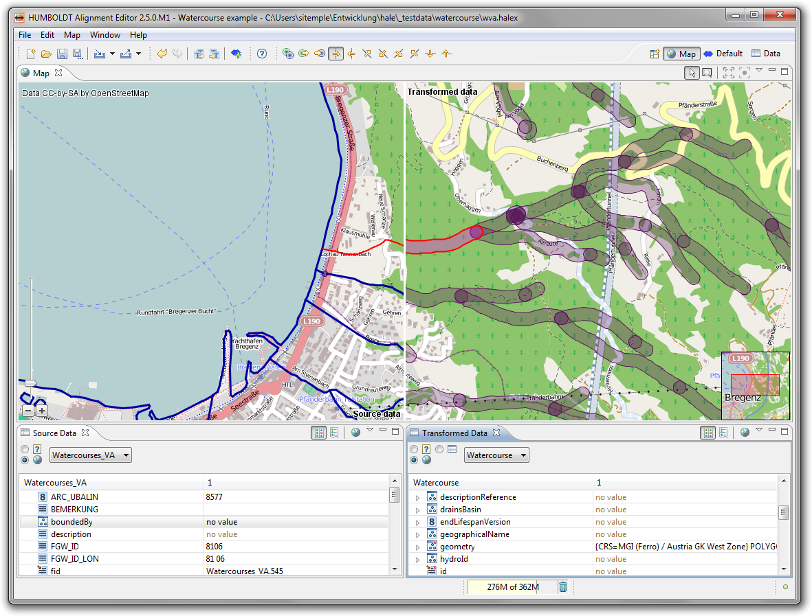

Map perspective
The map perspective features a map view that displays the
geometries contained in the data, provided that the corresponding
coordinates reference systems are known.

Following is a short description of the perspective's views:
- The Map view provides you with a cartographic
representation of the data. Source and transformed data are displayed
alongside each other, with different layouts to choose from. The map
can be used to select instances for examination in the data views, or
vice versa.
- The Source Data view displays samples of the loaded
source data. A filter query can be used to control which instances
are displayed.
- The Transformed Data view displays samples of the
transformed data. By default it is synchronized to the Source
Data view and contains the transformation result of the instances
represented there.